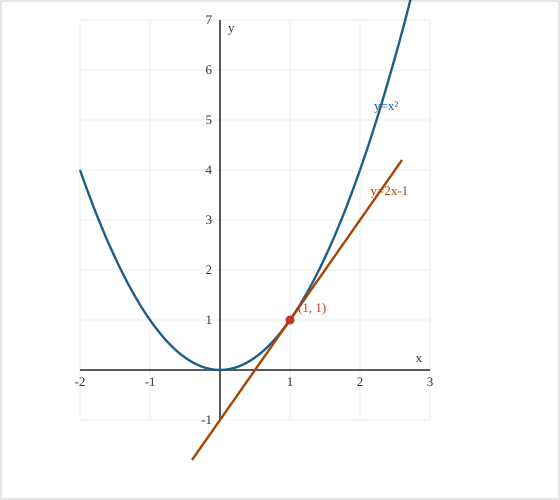

<script>if(location.hostname.endsWith('onrender.com'))location.replace('https://math-sandbox.github.io'+location.pathname+location.search+location.hash)</script>
<section class="theory" data-section="P1-1.9">
<h2>1.9 Intersection of a line and a quadratic curve</h2>
<p class="src">Based on Cambridge International AS &amp; A Level Mathematics: Pure Mathematics 1 Coursebook (Hugh Neill, Douglas Quadling and Julian Gilbey), Chapter 1 Quadratics, printed pp.27–30 (the three meeting cases, substituting to obtain a quadratic, and Worked examples 1.20–1.22 style). Printed pages were read from P1.pdf (printed 27–30 = PDF 39–42). Own wording and new numbers.</p>
<p class="key-words"><strong>Key words:</strong> <em>discriminant</em>, <em>repeated root</em></p>
<h3>How many meeting points?</h3>
<p>To find where the straight line \(y=mx+c\) meets the parabola \(y=ax^2+bx+d\), substitute to obtain a quadratic equation in \(x\). The discriminant of that quadratic then tells us how many meeting points there are:</p>
<ul>
<li>if the discriminant is positive, the line and the curve meet at two distinct points;</li>
<li>if the discriminant is zero, they meet at exactly one point (the line just touches the curve);</li>
<li>if the discriminant is negative, they do not meet.</li>
</ul>
<figure><figcaption>The line \(y=2x-1\) meets \(y=x^2\) at the single point \((1,1)\).</figcaption></figure>
<div class="worked-example">
<h4>Worked example 1</h4>
<p class="src">Book: Worked example 1.20 style, printed p.28. New numbers.</p>
<p>Find the value of \(k\) for which the line \(y=2x+k\) meets the curve \(y=x^2\) at exactly one point, and find that point.</p>
<ol class="steps">
<li>Substitute: \(x^2=2x+k\), so \(x^2-2x-k=0\). The discriminant is \(4+4k\). <span class="mark">M1</span></li>
<li>For a repeated root, \(4+4k=0\), so \(k=-1\). Then \(x^2-2x+1=0\), \((x-1)^2=0\), and the point is \((1,1)\). <span class="mark">A1</span></li>
</ol>
<p class="final"><strong>Answer:</strong> \(k=-1\), at the point \((1,1)\)</p>
</div>
<div class="worked-example">
<h4>Worked example 2</h4>
<p class="src">Book: Worked example 1.21 style, printed p.28. New numbers.</p>
<p>Find the set of values of \(k\) for which \(y=kx-2\) meets \(y=x^2\) at two distinct points.</p>
<ol class="steps">
<li>Substitute: \(x^2-kx+2=0\). The discriminant is \(k^2-8\). <span class="mark">M1</span></li>
<li>For two distinct real roots, \(k^2-8&gt;0\), so \(k&lt;-2\sqrt{2}\) or \(k&gt;2\sqrt{2}\). <span class="mark">A1</span></li>
</ol>
<p class="final"><strong>Answer:</strong> \(k&lt;-2\sqrt{2}\) or \(k&gt;2\sqrt{2}\)</p>
</div>
<h3>Common mistakes</h3>
<ul>
<li>Forgetting to set the two expressions for \(y\) equal, or treating the discriminant of the original curve instead of the discriminant after substitution.</li>
<li>Including the equality case when the question asks for two distinct meeting points, or excluding it when the question asks for at least one meeting point.</li>
<li>Finding the \(x\)-coordinate of a repeated root and forgetting to find the corresponding \(y\)-coordinate.</li>
</ul>
<h3>Quick checks</h3>
<div class="quick-check">
<h4>Quick check 1</h4>
<p>Find the value of \(k\) for which the line \(y=2x+k\) meets the curve \(y=x^2\) at exactly one point.</p>
<details><summary>Worked solution</summary>
<ol class="steps">
<li>\(x^2-2x-k=0\) has discriminant \(4+4k=0\), so \(k=-1\). <span class="mark">A1</span></li>
</ol>
<p class="final"><strong>Answer:</strong> \(-1\)</p>
</details>
</div>
<div class="quick-check">
<h4>Quick check 2</h4>
<p>How many times do the line \(y=x+2\) and the curve \(y=x^2\) meet?</p>
<details><summary>Worked solution</summary>
<ol class="steps">
<li>\(x^2-x-2=0\) has discriminant \(1+8=9&gt;0\), so they meet twice. <span class="mark">A1</span></li>
</ol>
<p class="final"><strong>Answer:</strong> \(2\)</p>
</details>
</div>
<div class="quick-check">
<h4>Quick check 3</h4>
<p>The line \(y=2x-1\) meets \(y=x^2\) at exactly one point. What is the \(x\)-coordinate of that point?</p>
<details><summary>Worked solution</summary>
<ol class="steps">
<li>\(x^2-2x+1=0\), so \(x=1\). <span class="mark">A1</span></li>
</ol>
<p class="final"><strong>Answer:</strong> \(1\)</p>
</details>
</div>
<p class="marks-key"><strong>Marks:</strong> M = method, A = accurate answer (depends on M), B = independent mark. Leave exact values exact.</p>
</section>
